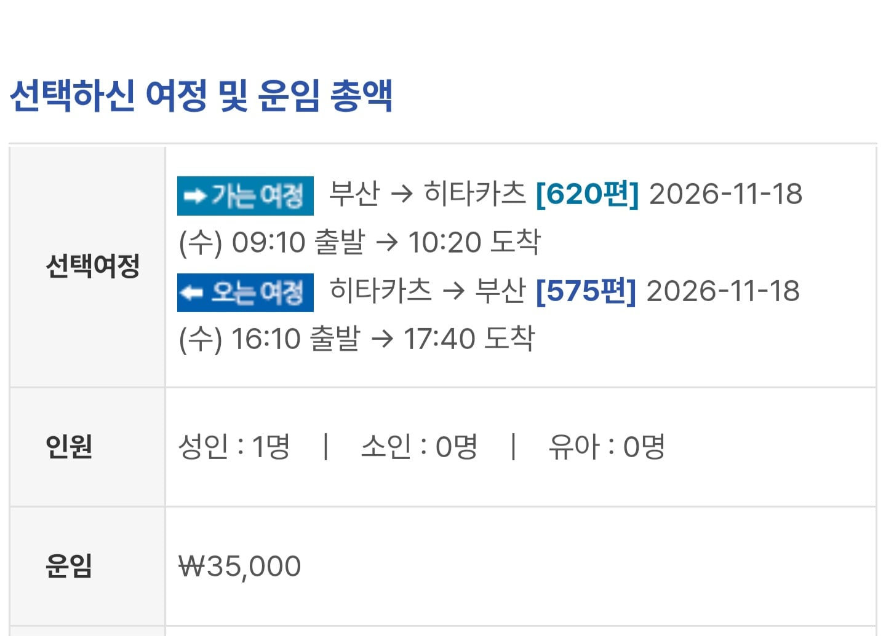

부산출발 대마도 평일 저가 왕복 3만5천원
터미널이용료 여객세 다해서 토탈 10정도듬
편도 소요시간 1시간 10분
2.5펜 3개월치 20만원
라멘값 만원 전기자전거 대여료 만원
자전거 타고 돌아다니면서 관광
추가 쇼핑하고 다해도 총 소비비용 40만원 안짝
한국에서 2.5펜 3개월치 구매시 92만원
대마도에 마운자로 들어올때까지 숨참아야되는 이유
관광하고 쇼핑하고 할꺼다하고 3개월치 사와도 40임

부산출발 대마도 평일 저가 왕복 3만5천원
터미널이용료 여객세 다해서 토탈 10정도듬
편도 소요시간 1시간 10분
2.5펜 3개월치 20만원
라멘값 만원 전기자전거 대여료 만원
자전거 타고 돌아다니면서 관광
추가 쇼핑하고 다해도 총 소비비용 40만원 안짝
한국에서 2.5펜 3개월치 구매시 92만원
대마도에 마운자로 들어올때까지 숨참아야되는 이유
관광하고 쇼핑하고 할꺼다하고 3개월치 사와도 40임
치고빠지기 식으로 1년 바짝 벌어볼만도 해보이는데
일본 내 택배서비스 해주는데도 있다던데
그냥 대마도 호텔까지 우편으로 배달시키고 대마도 가서 받아오면 되는거 아니냐? 냉장택배 된다는데
가능하긴한데 방법이 일주일 체류랑 대마도 두번방문해야함 도쿄병원비대면 진료받고 대마도 영업소에서 수령인데 배달오는시간과 비대면 진료는 일본땅에서 받아야함
그것도 규정된건 아님
마운자로 갤러리 주딱이 불법정보 공유로 찔려져서 갤터지는거 막아야 돼서 그런지 존나 예민해서 그렇게 공지한거임
일본은 비대면진료가 되는데 한국 땅에서 일본 비대면 받으면 그건 무면허 진료 아니냐! 그럼 대마도는 당일치기로 마운자로 받으려면 무조건 한국 땅에서 받았다는게 되므로 5일체류 해야한다! 이러는건데
아마 관세청에서 처방전 서류는 안보겠다 했으므로
여행자가 처방을 어떻게 받았고, 그게 위법이냐 아니냐는 애초에 관세청 소관 업무 범위를 지나간거고
아무튼 자가소비용이 맞으면 잡을 이유는 없을거임
흠 그렇군
대마도 병원에 이 소식을 알려줘야 준비를 힐텐데 걔네도
실제로 후쿠오카에서 온라인진료보고 대마도 호텔로 배송하기 가능
오 레알?
도쿄성지가 제일싸서 도쿄비대면진료받고 전국 택배수령가능하긴함
와 이미되네 ㅁㅊㅋㅋㅋㅋㅋ
그거 대마도는 막니마니 하는 말ㅇ ㅣ있던데 누구말이맞냐
내 생각에 근들갑이라고 봄. 애초에 처방전도 안본다 했고, 자가소비용을 따지는거지 비대면 진료의 위법성 판단은 별개일 듯
대마토가 서울왕복보다 훨씬 싸고 빠르네
대마운자로 가즈아
출입국 신고서? 거기 목적에 마운자로다로 라고 적자ㅎ 대충 아키하바라 끄덕짤
히타카츠는 진짜진짜개깡촌이라 관광할거 없음
와 나 어제 후쿠오카 출신 일본인이랑 얘기하는데
대마도(츠시마) 얘기 하니까 거기가 어디냐고 물어보더라
한국인은 다 아는데 근처 사는 일본인은 모름;;
근데 왜케 차이나는거임? 우리나라는 왜케 비쌈
마운자로는 원래 비만치료제가 아니라 당뇨병치료제임. 한국이나 일본이나 비만목적은 비급여. 하지만 일본은 당뇨병치료목적으로 급여화하면서 협상을 통해 전체적인 가격을 낮춘 케이스임. 반대로 한국은 당뇨병치료제 급여화가 안되어있어서 자기 맘대로 가격측정하는거고
협상 결렬인데 제도가 달라서 뭔가가 걸리는건지 정부가 무능한건지 제약사가 한국 개무시하고 호구 잡으려고 한건지 정확한게 없음 다만 취재 결과만 보면 정부가 병신임
일본은 최초부터 급여약품으로 팔기 시작했고 급여약 관련해서는 가격통제를 빡세게 가능해서 '너 가격 좋은 말 할 때 좀 떨궈라' 하면 떨굴 수 있을 정도로 힘이 쌤(과장 좀 보탰음)
그리고 한국은 최초부터 비급여약품으로 판매해서 가격을 제약사 맘대로 측정해서 판 결과가 이 금액인거임
이후에 제약사에서 마운자로 급여항목신청 했는데 아마 가격협상에서 파토나서 심사 떨어지고 재심사 받는다고 했음
듣기로는 마운자로 외에도 급여신청약에 대한 협상시 가격을 ㅈㄴ빡세게 떨굴려고 한다라는 말이 있긴하더라고
이 부분에 있어서는 무능이라기보다는 건보료 아낄려고 하다 제약사랑 협상파토났다고 보는게 맞는듯
위고비는 최근 급여항목심사신청했다고 본듯함
와씨 개쩐다
비대면 진료받고 호텔로 택배보내면 됨
2.5mg 2주치가 7만원이던데
저렴한데는 한달치가 7500엔 하더라
3개월치나 필요함?
그 숨참을 의지로 식욕을참으셈
그게 쉽게 됐으면 비만약 시장이 왜 생기겠음
4인가족 12개월 가능
삿포로 가는데 거긴 없으려나
한달 정도 지켜보다가 세관에서 막는지 안막는지부터 확인 결과 나오면 사야지
대마도 인구 2만명 깡촌이라 안들어올듯
들어왔는데 한국에서 싸게 풀리면 나가리인거 아냐